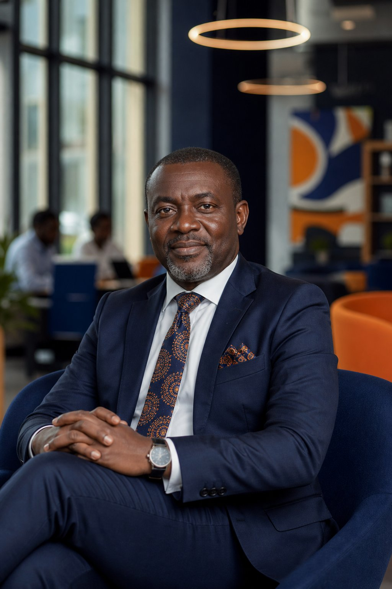
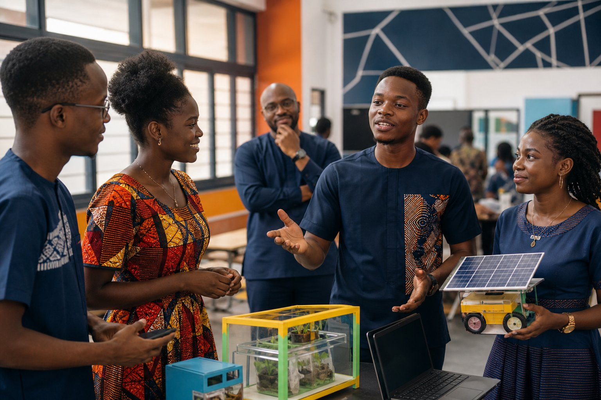
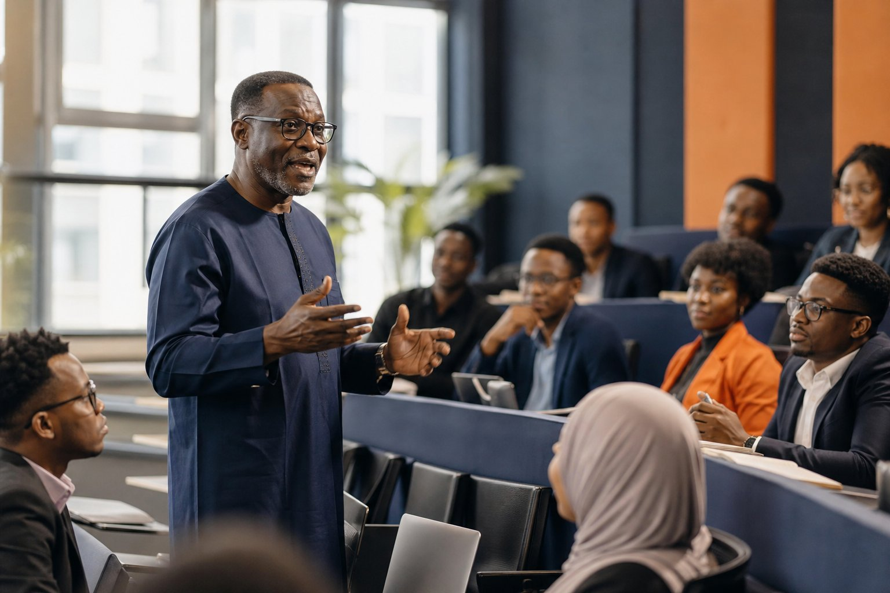

Education & coaching
Making entrepreneurship and finance feel accessible, relevant, and ready to apply — in classrooms and beyond.
Discover the approach ↗Dr. Edward Nii Amar Amarteifio is a scholar, ecosystem builder, and trusted advisor helping African institutions and enterprises turn ambitious ideas into lasting progress.

Ideas become meaningful when they create opportunity.
— Dr. AmarteifioMy work lives at the intersection of rigorous research, transformative education, and the practical tools that help people build better futures.
Making entrepreneurship and finance feel accessible, relevant, and ready to apply — in classrooms and beyond.
Discover the approach ↗Investigating the finance, systems, and digital capabilities that unlock sustainable growth for African SMEs.
Explore the research ↗Partnering with institutions, development agencies, and businesses to move from strategy to measurable action.
See how I help ↗
DHUB UCC
Dr. Edward Nii Amar Amarteifio is a development studies scholar and practitioner whose work is anchored in one conviction: Africa's most powerful resource is the ingenuity of its people.
As Director of D-Hub at the University of Cape Coast, he creates spaces where students, researchers, and entrepreneurs can test ideas, learn through doing, and build solutions for the realities around them.
His teaching and research connect the dots between finance, digital literacy, and inclusive enterprise — bringing academic depth to the everyday decisions that shape small businesses and communities.
Start a conversation ↗Investigating sustainable financing models, digital financial literacy, and the structural growth constraints of SMEs in Sub-Saharan Africa.
This study explores how adaptive financing strategies shape resilience among growth-oriented SMEs in Ghana.
Examining the practical capabilities that allow small firms to adopt and benefit from digital financial tools.
A practice-led framework for helping students move from problem discovery to validated opportunity.
Whether you are shaping policy, designing a programme, or growing an enterprise, I help teams find the clarity and capability to make change stick.
A living laboratory for innovation at the University of Cape Coast. D-Hub brings together design thinking, startup incubation, and industry partnerships to turn student potential into enterprise.
Partner with D-Hub ↗Connecting educators and institutions across the region to share what works.
↗Turning important ideas into compelling, fundable programmes.
Inquire ↗Giving teams the tools to solve better problems, faster.
Inquire ↗Clarity for the decisions that unlock sustainable growth.
Inquire ↗The best work is shared work. A selection of moments from classrooms, cohorts, convenings, and the wider innovation ecosystem.
Dr. Amarteifio didn't just teach entrepreneurship; he gave us the framework — and the courage — to launch our business.
For academic collaborations, consulting engagements, speaking invitations, or student matters, I would be glad to hear from you.